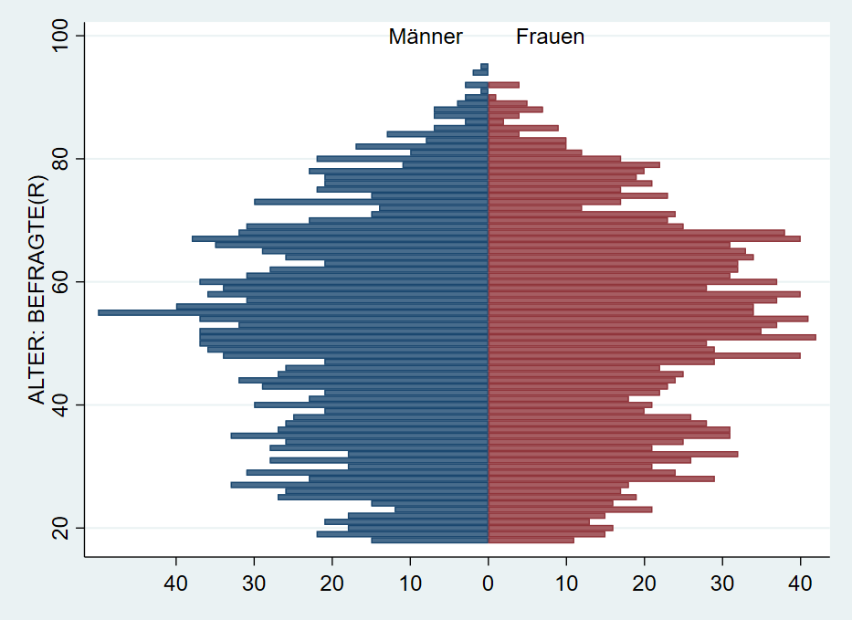
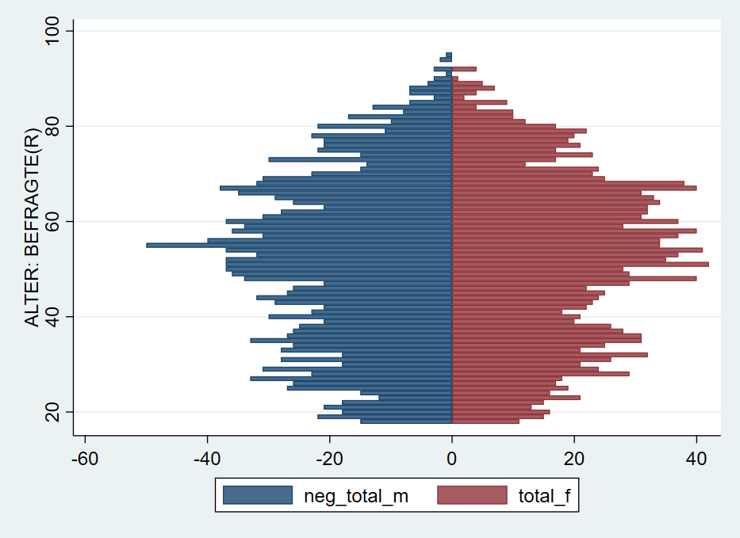

- Herzlich Willkommen!
- 1 Einstieg in Stata
- 2 Arbeiten mit Datensätzen in Stata
- 2.1 Vorab: Befehlsstruktur & Hilfe
- 2.2 Auszählen & Überblick erhalten
- 2.3 Neue Variablen erstellen
- 2.4 Bestehende Variablen verändern
- 2.5 gen ist gut, Kontrolle ist besser
- 2.6 Fehlende Werte
- 2.7 if Bedingungen und fehlende Werte
- 2.8 keep & drop
- 2.9 Labels und if-Bedingungen
- 2.10 Nochmal von vorne: Daten neu laden
- 2.11 Speichern
- 2.12 Übungen
- 2.13 Profi-Übungen
- 3 Deskriptive Statistik
- 4 Datenvisualisierung in Stata
- 5 Zusammenhangsmaße
- 6 Zusammenhänge 2
- 7 Inferenzstatistik I
- 8 Inferenzstatistik II
- 9 Hypothesentests
- 10 Ergebnisexport & weitere Tipps
- 11 Fortgeschrittene Themen
4.5 Bevölkerungspyramide

Auch eine Bevölkerungspyramide lässt sich als Stata-Grafik erstellen. Allerdings müssen dazu einige Zwischenschritte durchlaufen, die fortgeschrittene Datenaufbereitung mit collapse voraussetzen. Außerdem könnte ein Teil der Aufbereitung mit reshape abgekürzt werden. Mehr Informationen dazu finden sich am Ende dieses Skripts in Kapitel 11.
Die grundsätzliche Funktion für die Bevölkerungspyramide ist ein Balkendiagramm mit graph twoway bar , horizontal. Die Länge der Balken soll jeweils durch die Anzahl der Fälle in jeder Altersstufe, getrennt nach Geschlecht, bestimmt werden. Dazu müssen wir also zunächst die Anzahl der Befragten pro Alterstufe und Geschlecht bestimmen. Wenn wir den Allbus 2018 laden, haben wir ja einen Datensatz mit einer Zeile pro Person. Was wir jetzt aber benötigen ist eine Variante, in der wir den Datensatz sozusagen “zusammenschieben”: wir brauchen jeweils eine Zeile pro Altersstufe und Geschlecht und eine Variable mit der Zahl der Befragten.
## age sex Anzahl_Befragte
## 1 18 1 15
## 2 18 2 11
## 3 19 1 22
## 4 19 2 15
## 5 20 1 18
## 6 20 2 16Um dorthin zu kommen, steht uns der collapse-Befehl zur Verfügung:
cd ""
use "Allbus_2018.dta", clear
tab agec
keep if sex > 0
keep if agec > 0
collapse (count) respid , by(sex age)
list in 1/8Unter respid ist jetzt die Zahl der Befragten in der jeweiligen Kombination aus age und sex abgelegt:
## age sex respid
## 1 18 1 15
## 2 18 2 11
## 3 19 1 22
## 4 19 2 15
## 5 20 1 18
## 6 20 2 16
## 7 21 1 21
## 8 21 2 13Um verwirrung zu vermeiden, benennen wir respid in total um:
Allerdings möchten wir jetzt die Angaben für Frauen und Männer in getrennte Variablen ablegen:
## age sex total total_m total_f
## 1 18 1 15 15 .
## 2 18 2 11 . 11
## 3 19 1 22 22 .
## 4 19 2 15 . 15
## 5 20 1 18 18 .
## 6 20 2 16 . 16
## 7 21 1 21 21 .
## 8 21 2 13 . 13
## 9 22 1 18 18 .
## 10 22 2 15 . 15Jetzt können wir daraus ein Balkendiagramm erstellen:
 Was hier noch fehlt ist, die Umorientierung der Zahlen für die Männer “nach links”. Dazu multiplizieren wir
Was hier noch fehlt ist, die Umorientierung der Zahlen für die Männer “nach links”. Dazu multiplizieren wir total_m mit -1:
Damit dann verwenden wir neg_total_m für die Balken der Männer:

Mit xlabel und legendnoch einige Anpassungen, außerdem können wir mit text noch Beschriftungen hinzufügen: